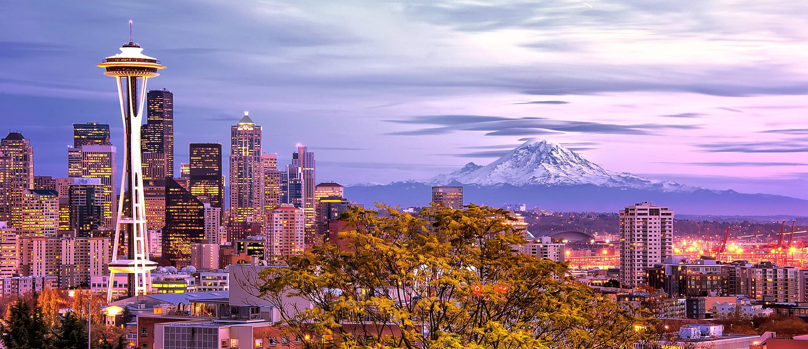

<ion-view hide-nav-bar="true">
  <ion-content class="uspic padding" ng-controller="GalleryCtrl">
    <div class="us">
      <h1 class="tagline">Life in the US</h1>
    </div>
    <div class="main-images">
      </img>
    </div>
    <div class="us-frame">
      <p>Since our marriage in 1996 all but 3 of those years have been spent living in the United States, primarily in the Seattle, Washington metro area. Some people wish it wasn't cloudy so often but we rarely have extreme temperatures, hot or cold. That means it's almost always a good day to go outside and you usually don't need to run heat or air conditioning all day long.</p>
      <p>Washington State is home to a number of leading companies such as Microsoft, Nordstroms, Amazon, Starbucks, Cray, Vulcan, Blue Origin, Fred Hutchinson Cancer Research Center, Real Networks, Redfin, Weyerhauser, Zillow, Alaska Airlines, Costco, Nintendo, Oberto, PACCAR, R.E.I. and T-Mobile. Boeing and UPS should be in that list but they moved their corporate headquarters. Boeing is still the largest private employer in the State with nearly half of their employees working here.</p>
      <p>The western US is very nice and offers a variety of landscapes including oceans, mountains, canyons, volcanoes, rivers, deserts, marshes and more. Other boasts are having the largest, oldest and tallest trees and the longest natural sand spit in the world. We've not traveled farther east than Wyoming or Arizona but we'll get there eventually. In the meantime, there's so much to see around here. Below are a few pictures we've taken of this beautiful region.</p>
    </div>
    <a class="item item-list-detail">
      <ion-scroll direction="x">
        
      </ion-scroll>
    </a>
  </ion-content>
</ion-view>
